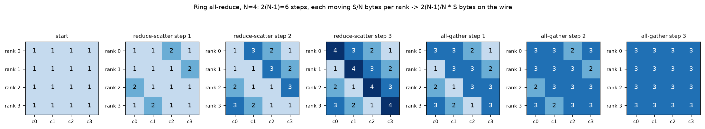
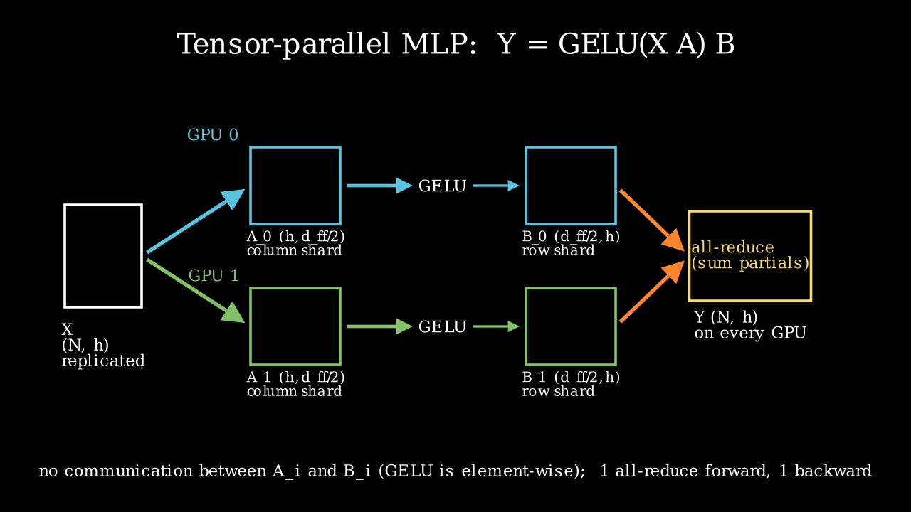
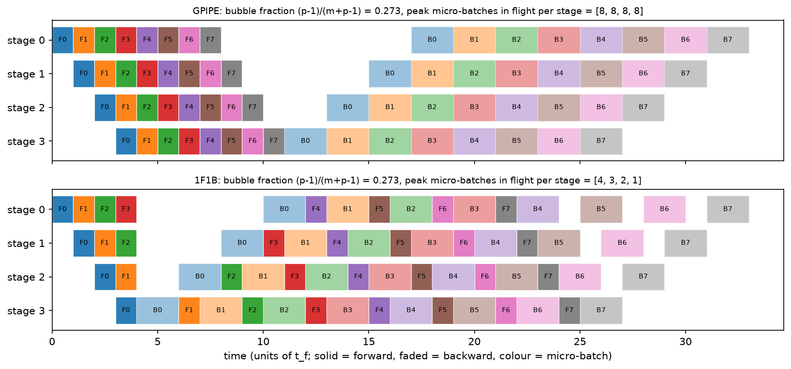

Distributed training¶
Why this matters at staff level. "Estimate the memory to train a 70B model with Adam in mixed precision" and "how would you shard this model across 8 GPUs" are the two most common systems questions in frontier-lab and autonomy loops, and they are graded on whether you derive the numbers (16 bytes per parameter, \(2(N-1)/N\) bytes on the wire, \((p-1)/(m+p-1)\) bubble) rather than recite them. Strong signal is a candidate who turns the question into a memory budget, a bandwidth hierarchy and a decision procedure, then names who runs it that way in production.
TL;DR: the interview card¶
- Training state per parameter (Adam, bf16 mixed precision): \(2 + 2 + 4 + 4 + 4 = 16\) bytes (bf16 weight, bf16 grad, fp32 master, Adam \(m\), Adam \(v\)). 7B → 108 GB, 70B → 1.13 TB, 405B → 6.5 TB of state before a single activation.
- Activations per layer (Korthikanti et al. 2022): \(sbh\,(34 + 5as/h)\) bytes, where the \(5as^2b\) term is the materialised attention scores. Tensor parallel \(t\) + sequence parallel divides everything by \(t\); selective recompute or FlashAttention deletes the \(5as/h\) term; full recompute leaves \(2sbh\).
- Ring all-reduce: reduce-scatter then all-gather, \(2(N-1)\) steps of \(S/N\) bytes, so \(2\frac{N-1}{N}S \to 2S\) bytes per rank on the wire, independent of \(N\).
- Data parallel (DDP): replicate the model, split the batch, all-reduce the gradients, overlapped with backward in buckets. Communication per step \(\approx 2 \cdot 2P\) bytes.
- ZeRO-1/2/3 (FSDP = ZeRO-3): shard optimizer states / + gradients / + parameters across the \(N\) data-parallel ranks; per-GPU state \(16P/N\) at stage 3, at \(1.5\times\) DDP's traffic.
- Tensor parallel (Megatron): column-shard the first matrix, row-shard the second; GELU and per-head attention are shard-local, so a Transformer block needs exactly two all-reduces forward, two backward. Keep it inside the NVLink domain.
- Pipeline parallel: \(p\) stages, \(m\) micro-batches, bubble fraction \(\frac{p-1}{m+p-1}\); 1F1B keeps the same bubble but bounds in-flight activations to \(p\); interleaving with \(v\) chunks divides the bubble by \(v\).
- Context / sequence parallel: ring attention passes K/V blocks around a ring; Ulysses all-to-alls heads ↔ sequence. Needed when \(s\) is so long that one layer's activations do not fit.
- Expert parallel: MoE experts on different ranks, tokens routed by all-to-all.
- Composition rule: TP within the node (NVLink, ~hundreds of GB/s), PP and DP across nodes (InfiniBand, tens of GB/s per port); minimise model-parallel degree that fits, then spend the rest on data parallelism. Llama 3 405B: TP 8 × CP × PP 16 × DP on 16k H100s.
1. Intuition first¶
Take a two-layer MLP, \(Y = \text{GELU}(XA)B\) with \(X \in \R^{4 \times 2}\) (a 4-token micro-batch, width 2), \(A \in \R^{2 \times 4}\), \(B \in \R^{4 \times 2}\), and four GPUs. There are exactly three things you can split, and every distributed-training system is a composition of them:
- Split the tokens (data parallel). GPU \(i\) gets row \(i\) of \(X\) and a full copy of \(A, B\). Each computes its own gradient from one token; the gradients are averaged. Nothing about the maths changes; you pay one all-reduce of \(\nabla A, \nabla B\) per step.
- Split the matrices (tensor parallel). GPU \(i\) gets column \(i\) of \(A\) (shape \(2 \times 1\)) and row \(i\) of \(B\) (shape \(1 \times 2\)). \(XA_i\) is one column of the hidden activation, GELU acts element-wise so no GPU needs another GPU's column, and \(\text{GELU}(XA_i)B_i\) is a partial sum of the output: one all-reduce recovers \(Y\). Two matmuls, one collective.
- Split the layers (pipeline parallel). GPUs 0–1 hold \(A\), GPUs 2–3 hold \(B\); token activations flow forward through the stages and gradients flow back. The first stage is idle while it waits for the last stage to finish, unless you feed it several micro-batches.
Everything else in this chapter is bookkeeping on those three moves: what gets replicated, what gets sharded, and how many bytes cross which link.

The figure shows a ring all-reduce of a tensor split into four chunks. Read left to right: in three reduce-scatter steps each rank ends up owning one fully reduced chunk (the dark diagonal), and in three all-gather steps that chunk is copied around the ring. Each step moves \(S/4\) bytes per rank.

Megatron's MLP: column shards of \(A\) feed row shards of \(B\) with no communication in between; the only collective is the all-reduce of the partial outputs.
2. The math¶
2.1 Memory accounting: the 16 bytes per parameter¶
Mixed-precision training with Adam keeps, per parameter, a bf16 copy of the weight for the forward and backward matmuls, a bf16 gradient, an fp32 master copy of the weight so that small updates are not rounded away (bf16 has 8 bits of mantissa, so a step of relative size \(< 2^{-8}\) would vanish), and the two fp32 Adam moments:
Frameworks that keep fp32 gradients (Megatron's default with distributed optimizer) make it 18; plain SGD without momentum in bf16 with a master copy is 8; 8-bit Adam moments bring it to 10. The formula tells you the persistent state \(M_\text{state} = 16P\): 7B parameters is 108 GB, so a 7B model does not fit on one 80 GB GPU for training even before activations, and 70B is 1.13 TB, so you need at least 15 GPUs of pure state before any parallelism efficiency question.
2.2 Activation memory per layer¶
Activations are the tensors saved in the forward pass for the backward pass. Korthikanti et al. (2022) count them for one Transformer layer with sequence length \(s\), micro-batch \(b\), hidden size \(h\), \(a\) heads, 16-bit storage, GELU MLP with \(d_{ff} = 4h\). Walk the layer:
- Attention block. Input to \(Q, K, V\) projections: \(2sbh\). \(Q\) and \(K\) for the score matmul: \(4sbh\). Softmax output \((a, s, s)\) per sequence: \(2as^2b\). Dropout mask on the scores: \(as^2b\) (one byte). \(V\) and the softmax output again for the \(PV\) matmul: \(2sbh + 2as^2b\). Input to the output projection: \(2sbh\). Attention dropout mask: \(sbh\). Total \(11sbh + 5as^2b\).
- MLP block. Input to the up-projection \(2sbh\); GELU input \(8sbh\); down-projection input \(8sbh\); dropout mask \(sbh\). Total \(19sbh\).
- Two LayerNorms, each storing its input: \(4sbh\).
Three facts fall out. First, the \(5as^2b\) term is quadratic in sequence length; at \(s = h\) it already equals \(5a \cdot sbh\), which for \(a = 32\) is five times the rest. Second, FlashAttention never materialises the \((a,s,s)\) tensor, and selective recomputation recomputes exactly that part in backward, so both reduce the layer to \(34sbh\). Third, tensor parallelism with degree \(t\) only divides the parts that live inside the sharded matmuls: without sequence parallelism the LayerNorm inputs and dropout masks stay replicated, giving \(sbh(10 + 24/t + 5as/(ht))\); with sequence parallelism (shard the LN and dropout along \(s\) and turn the all-reduce into a reduce-scatter + all-gather pair) everything divides: \(sbh(34/t + 5as/(ht))\). Full recomputation keeps only the layer input, \(2sbh\), and pays a second forward pass.
Worked examples (from memory_calc.py, micro-batch 1):
| Model | \(P\) | State \(16P\) | \(A_\text{layer}\) no recompute | selective / Flash | full recompute | \(L\) layers |
|---|---|---|---|---|---|---|
| Llama-2-7B, \(s=4096\) | 6.74B | 108 GB | 3.03 GB | 0.53 GB | 0.031 GB | 32 |
| Llama-3-70B, \(s=8192\) | 70.6B | 1.13 TB | 22.1 GB | 2.13 GB | 0.125 GB | 80 |
| Llama-3-405B, \(s=8192\) | 405.9B | 6.5 TB | 44.3 GB | 4.25 GB | 0.25 GB | 126 |
Without recomputation the 7B model at \(s = 4096\) stores \(32 \times 3.03 = 97\) GB of activations per micro-batch of one sequence. That is why nobody trains without FlashAttention or selective recompute: the activations, not the parameters, are the first thing that does not fit.
2.3 Collectives and the ring all-reduce¶
An all-reduce of \(S\) bytes over \(N\) ranks must at least deliver every rank's contribution to every other rank. The ring algorithm splits the tensor into \(N\) chunks and runs two phases (figure above):
- Reduce-scatter. \(N-1\) steps. In step \(k\), rank \(r\) sends chunk \((r-k) \bmod N\) to rank \(r+1\), which adds it to its own copy. After \(N-1\) steps rank \(r\) holds the fully reduced chunk \((r+1) \bmod N\). Bytes sent per rank: \((N-1)\,S/N\).
- All-gather. \(N-1\) more steps forwarding the finished chunks around the ring. Another \((N-1)\,S/N\) bytes per rank.
with per-message latency \(\alpha\) and per-link bandwidth \(\beta\). The bandwidth term is bandwidth-optimal (every rank must receive at least \((N-1)/N \cdot S\) bytes of other ranks' data and send its reduced chunk out again); the latency term grows linearly with \(N\), which is why NCCL switches to tree algorithms for small messages and large \(N\). Reduce-scatter, all-gather, all-to-all and a chunked broadcast each cost \(\frac{N-1}{N}S\); the sum of the first two is an all-reduce, and that identity is the whole idea of ZeRO.
For a 7B model's bf16 gradients (\(S = 13.5\) GB) across 8 GPUs, the bandwidth term is \(2 \cdot \frac{7}{8} \cdot 13.5\,\text{GB} / 450\,\text{GB/s} \approx 52\) ms on NVLink and about 470 ms over a single 400 Gb/s InfiniBand port, the first number hides behind a backward pass, the second does not.
2.4 Data parallelism and DDP mechanics¶
Each rank computes the gradient of the mean loss on its shard of the batch. Because the
global loss is the mean over \(N\) equal shards, \(\nabla L = \frac{1}{N}\sum_r \nabla L_r\), so an
all-reduce with SUM followed by division by \(N\) (or AVG) yields the exact full-batch
gradient. PyTorch's DistributedDataParallel registers autograd hooks so that as soon as the
gradients of a bucket of parameters (25 MB by default, allocated in reverse registration
order so that the last layers' gradients, which are ready first, go first) are complete, its
all-reduce is launched on a side stream. Communication therefore overlaps with the remaining
backward computation; only the first bucket's all-reduce is exposed. The optimizer step then
runs identically on every rank, so weights stay bit-identical without any broadcast.
Per step each rank sends \(2\frac{N-1}{N} \cdot 2P\) bytes; memory is the full \(16P\) on every rank, which is the limitation ZeRO removes.
2.5 ZeRO stages and FSDP¶
The observation: in DDP every rank holds the full \(16P\) but only needs the optimizer state of the parameters it will update if we agree that rank \(r\) updates shard \(r\). Rajbhandari et al. (2020) shard progressively:
| Stage | Sharded across \(N\) | Per-GPU state | Communication per step (per rank) |
|---|---|---|---|
| 0 (DDP) | nothing | \(16P\) | all-reduce grads: \(2\frac{N-1}{N}\cdot 2P\) |
| 1 | optimizer states (12 B/param) | \(4P + 12P/N\) | reduce-scatter grads + all-gather updated weights: \(\frac{N-1}{N}(2P + 2P)\): same as DDP |
| 2 | + gradients | \(2P + 14P/N\) | same as stage 1 (gradients are reduce-scattered anyway) |
| 3 (FSDP) | + parameters | \(16P/N\) | all-gather params in forward, all-gather again in backward, reduce-scatter grads: \(\frac{N-1}{N}(2P + 2P + 2P)\) = 1.5× DDP |
Stage 3 is the only stage whose memory scales all the way down with \(N\), and its price is that every layer's parameters are gathered twice per step (FSDP can keep them between forward and backward at the cost of memory). With 7B on 8 GPUs: DDP needs 108 GB per GPU (does not fit); ZeRO-1 needs \(4 \cdot 6.74 + 12 \cdot 6.74/8 = 37\) GB; ZeRO-3 needs 13.5 GB; each plus 17 GB of activations at \(s = 4096\) with selective recompute. PyTorch FSDP (Zhao et al. 2023) implements stage 3 with the parameters flattened per "FSDP unit" (usually one Transformer block), so that the all-gather for block \(l+1\) is prefetched during the compute of block \(l\).
2.6 Tensor parallelism: why exactly two all-reduces per block¶
Row-major, \(Y = XW\) with \(X \in \R^{N \times d_{in}}\) (rows are tokens). Shoeybi et al. (2019):
- Column-parallel. \(W = [W_1 \mid \dots \mid W_t]\) along \(d_{out}\). Rank \(i\) computes \(Y_i = XW_i \in \R^{N \times d_{out}/t}\). Forward: no communication (X is replicated). Backward: \(\nabla X = \sum_i \nabla Y_i W_i^\top\), an all-reduce.
- Row-parallel. \(W = [W_1; \dots; W_t]\) along \(d_{in}\), input already sharded along \(d_{in}\). Rank \(i\) computes the partial \(X_iW_i \in \R^{N \times d_{out}}\). Forward: all-reduce the partial sums. Backward: \(\nabla X_i = \nabla Y W_i^\top\) needs no communication.
Megatron calls these conjugate operators \(f\) (identity forward, all-reduce backward) and \(g\) (all-reduce forward, identity backward). Chain a column-parallel \(A\) into a row-parallel \(B\):
because GELU is element-wise, so \(\text{GELU}([XA_1 \mid \dots \mid XA_t]) = [\text{GELU}(XA_1) \mid \dots]\) and the row-parallel matmul consumes each rank's own column block. One all-reduce forward (after \(B\)), one backward (before \(A\)). Attention is the same pattern: split \(W_Q, W_K, W_V\) by head (column-parallel), compute each rank's heads locally, softmax is per head, so no cross-rank dependency, then the output projection \(W_O\) is row-parallel over the concatenated heads.
That is \(4 \cdot 2\frac{t-1}{t} \cdot 2sbh\) bytes per layer per micro-batch on the critical path of every layer, which is why TP lives on NVLink. Sequence parallelism (Korthikanti et al. 2022) replaces the all-reduce with a reduce-scatter along \(s\) before the LayerNorm/dropout region and an all-gather after it; the traffic is identical (reduce-scatter + all-gather = an all-reduce), but the LN inputs and dropout masks are now sharded \(t\) ways too.
2.7 Pipeline parallelism: the bubble¶
\(p\) stages, \(m\) micro-batches per global batch, forward \(t_f\) and backward \(t_b\) per micro-batch per stage. The last stage cannot start until the first micro-batch has traversed \(p-1\) stages, and the first stage cannot finish its backward until the last stage's backward has come back; those ramps are idle time on every stage:
GPipe (Huang et al. 2019) runs all \(m\) forwards then all \(m\) backwards and must hold \(m\) micro-batches of activations on every stage. 1F1B (PipeDream-Flush; Narayanan et al. 2021) has stage \(i\) do \(p-1-i\) warm-up forwards and then alternate one forward with one backward; the bubble is identical but stage \(i\) holds at most \(p - i\) micro-batches. Interleaved 1F1B assigns \(v\) non-contiguous chunks of layers to each stage so a micro-batch visits each GPU \(v\) times with \(1/v\) of the work each visit: bubble \(/v\), point-to-point traffic \(\times v\). Zero-bubble schedules (Qi et al. 2023) split the backward into activation-gradient and weight-gradient halves and delay the weight half to fill the ramp-down, reaching near-zero bubble at the cost of a more complex schedule and some extra memory.

Both schedules finish at the same time (\((m+p-1)(t_f + t_b)\) with \(m=8\), \(p=4\)), so the bubble fraction is \(3/11 = 0.273\) for both; the difference is that 1F1B's first stage holds four micro-batches of activations while GPipe's holds eight.
2.8 Sequence/context parallelism and expert parallelism¶
When \(s\) is long enough that one layer's \(34sbh/t\) does not fit, or the \((a,s,s)\) score block does not, you shard the sequence across ranks. Ring attention (Liu et al. 2023) keeps \(Q\) blocks resident and rotates \(K, V\) blocks around a ring, accumulating the online-softmax partials of FlashAttention; communication of one \(K,V\) block overlaps with the compute of the current block, so it is free while the block compute time exceeds the transfer time. DeepSpeed Ulysses (Jacobs et al. 2023) instead all-to-alls from sequence-sharded to head-sharded before attention and back after; each rank then computes full attention for \(a/t\) heads. Ulysses has \(t \le a\) (well, \(\le\) KV heads with GQA) and lower traffic; ring attention scales to any degree. Llama 3 used ring-style context parallelism with an all-gather of K/V for its 128K-context stage.
Mixture-of-experts layers add expert parallelism: experts live on different ranks and each token is sent to its routed expert with an all-to-all (and back with another). Its cost is \(\frac{N-1}{N} \cdot\) (tokens × hidden × bytes) twice per MoE layer, and its failure mode is load imbalance: a hot expert's rank becomes the straggler.
2.9 Composition and the decision procedure¶
The bandwidth hierarchy decides where each parallelism goes (datasheet figures; verify against your hardware): NVLink 4 on H100 gives 900 GB/s aggregate per GPU within a node; a 400 Gb/s InfiniBand NDR port gives 50 GB/s; PCIe 5.0 x16 about 64 GB/s per direction. That is an order of magnitude between intra-node and inter-node.
- TP within the node, degree \(t \le\) NVLink domain size (8) and \(t \mid a\). Its all-reduces sit on every layer's critical path.
- PP across nodes. Point-to-point activations of size \(2sbh\) per micro-batch per stage boundary are small and pipelined; make \(m \gg p\) to keep the bubble below ~5–10 %.
- DP (with ZeRO-1 or FSDP) across the remaining ranks. Its gradient traffic overlaps with backward; its volume is \(\propto P/(tp)\) per rank.
- Choose the smallest \(t \cdot p\) that fits the memory budget with headroom (activations
with selective recompute, micro-batch 1), because every model-parallel rank is one fewer
data-parallel rank and PP adds bubble.
choose_parallelisminparallelism.pyimplements exactly this search. - Add CP only when \(s\) forces it; EP only for MoE.
3. Implementation¶
3.1 Training-memory calculator¶
def training_memory_per_gpu(cfg, plan, seq_len, micro_batch, recompute="none",
sequence_parallel=False, flash_attention=True, ...):
params = count_params(cfg)["total"]
params_per_gpu = params / (plan.tp * plan.pp) # scalar: model parallel split
bpp = bytes_per_param_training(weight_dtype, grad_dtype, True, optimizer) # {'weights': 2, 'grads': 2, ...}
shard_w = plan.dp if plan.zero_stage >= 3 else 1
shard_g = plan.dp if plan.zero_stage >= 2 else 1
shard_o = plan.dp if plan.zero_stage >= 1 else 1
weights = params_per_gpu * bpp["weights"] / shard_w # bytes
grads = params_per_gpu * bpp["grads"] / shard_g # bytes
optim = params_per_gpu * (bpp["master"] + bpp["optimizer_moments"]) / shard_o # bytes
per_layer = activation_bytes_per_layer(seq_len, micro_batch, cfg.d_model, cfg.n_heads,
plan.tp, sequence_parallel, recompute, flash_attention) / plan.cp
layers_per_stage = cfg.n_layers / plan.pp
in_flight = plan.pp # 1F1B first stage holds pp micro-batches
activations = per_layer * layers_per_stage * in_flight
return MemoryBreakdown(weights, grads, optim, activations)
The function is the derivation in §2.1–2.5 made executable. Parameters are divided by the
model-parallel degree first, then each of the three state categories is divided by dp only if
its ZeRO stage says so. Activations use the Korthikanti formula with the TP/SP/recompute
variant selected by flags, and the pipeline term multiplies by pp because the first 1F1B
stage holds pp micro-batches in flight; the net effect is that pipeline parallelism reduces
parameter memory but not first-stage activation memory, which surprises people.
count_params reproduces the published sizes to three digits (6.74B, 8.03B, 70.6B, 405.9B),
which is the first thing the test checks; if the parameter count is wrong every downstream
number is.
3.2 Tensor-parallel Linear pair with explicit shards¶
def tensor_parallel_mlp(X, A, B, tp):
A_shards = column_shards(A, tp) # tp x (h, d_ff / tp)
B_shards = row_shards(B, tp) # tp x (d_ff / tp, h)
hidden_shards = [F.gelu(H_i) for H_i in column_parallel_forward(X, A_shards)] # tp x (N, d_ff / tp)
return row_parallel_forward(hidden_shards, B_shards) # (N, h)
def row_parallel_forward(X_shards, W_shards):
partials = [X_i @ W_i for X_i, W_i in zip(X_shards, W_shards)] # each (N, d_out)
return simulated_all_reduce(partials) # (N, d_out): the one collective
One process holds all tp shards as a Python list, so "rank \(i\)" is just index \(i\) and the
all-reduce is a sum over the list. The test asserts tensor_parallel_mlp(X, A, B, t) equals
F.gelu(X @ A) @ B for \(t \in \{1, 2, 4, 8\}\) to \(10^{-4}\), and the same for the head-parallel
attention in tensor_parallel_attention, which shards \(W_Q, W_K, W_V\) by columns (heads) and
\(W_O\) by rows. If you understand why hidden_shards never needs its neighbours, you understand
Megatron.
3.3 A runnable two-process DDP example (CPU, gloo)¶
def _worker(rank, world_size, init_file, out_dir):
dist.init_process_group("gloo", init_method=f"file://{init_file}", rank=rank, world_size=world_size)
X, y = make_data() # (N, 8), (N, 1) identical on every rank
n_local = X.shape[0] // world_size
X_r = X[rank * n_local:(rank + 1) * n_local] # (N / world, 8) this rank's shard
y_r = y[rank * n_local:(rank + 1) * n_local] # (N / world, 1)
model = make_model() # same seed -> identical weights
nn.functional.mse_loss(model(X_r), y_r).backward() # local gradients
manual_all_reduce_grads(model, world_size) # p.grad <- mean over ranks
...
ddp = nn.parallel.DistributedDataParallel(make_model())
nn.functional.mse_loss(ddp(X_r), y_r).backward() # bucketed all-reduce via hooks
run_ddp_demo spawns two CPU processes with torch.multiprocessing.spawn, has each compute
gradients on its half of a 64-example batch, all-reduces them by hand and again through
DistributedDataParallel, and compares to the single-process full-batch gradient. The three
numbers it returns are all \(\sim 3 \cdot 10^{-8}\) (fp32 summation order) and ranks agree exactly.
The test skips if process spawning is unavailable in the sandbox.
3.4 Bubble-fraction calculator and schedule simulator¶
bubble_fraction(p, m, v) is the boxed formula; simulate_schedule("1f1b", p, m, t_f, t_b)
list-schedules the ops with their dependencies (F\(_j\) on stage \(i\) needs F\(_j\) on stage \(i-1\);
B\(_j\) needs B\(_j\) on stage \(i+1\)) and returns start/end times, from which the figure above and
peak_in_flight are computed. The test checks the simulated makespan equals \((m+p-1)(t_f+t_b)\)
for both schedules and that in-flight counts are \([m,\dots,m]\) for GPipe and \([p, p-1, \dots, 1]\)
for 1F1B.
Full implementation: src/mlbook/systems/memory_calc.py
"""Training-memory accounting for dense Transformers (pure Python / NumPy).
memory_per_gpu = weights + gradients + optimizer_states + activations (+ workspace)
Bytes per parameter for Adam in bf16 mixed precision (the number to reproduce at a
whiteboard):
2 (bf16 weight) + 2 (bf16 grad) + 4 (fp32 master) + 4 (Adam m) + 4 (Adam v) = 16 B/param
ZeRO stages shard the states across the data-parallel group of size ``dp``:
stage 1: optimizer states / dp
stage 2: + gradients / dp
stage 3: + weights / dp (FSDP "full shard" == ZeRO-3)
Activation memory per layer (Korthikanti et al. 2022, "Reducing Activation
Recomputation in Large Transformer Models", 16-bit activations, classic GELU MLP
with d_ff = 4h, attention scores materialised):
A_layer = s * b * h * (34 + 5 * a * s / h) bytes, no parallelism
A_layer = s * b * h * (10 + 24/t + 5 a s / (h t)) tensor parallel degree t
A_layer = s * b * h * (34/t + 5 a s / (h t)) t + sequence parallel
A_layer = s * b * h * 34 / t + selective recompute
A_layer = 2 * s * b * h full recompute (layer input only)
where s = sequence length, b = micro-batch, h = hidden size, a = attention heads.
"""
from __future__ import annotations
from dataclasses import dataclass
BYTES_PER_DTYPE: dict[str, float] = {
"fp32": 4.0,
"tf32": 4.0, # stored as fp32, computed with 10-bit mantissa
"fp16": 2.0,
"bf16": 2.0,
"fp8": 1.0,
"int8": 1.0,
"int4": 0.5,
}
GB = 1024**3
@dataclass(frozen=True)
class TransformerConfig:
"""Shapes of a decoder-only Transformer.
``n_kv_heads`` < ``n_heads`` means grouped-query attention; ``gated_mlp`` means
SwiGLU-style (three matrices of shape (h, d_ff)) instead of two.
"""
n_layers: int
d_model: int
n_heads: int
d_ff: int
vocab: int
n_kv_heads: int | None = None
gated_mlp: bool = True
tie_embeddings: bool = False
@property
def d_head(self) -> int:
return self.d_model // self.n_heads
@property
def kv_heads(self) -> int:
return self.n_kv_heads or self.n_heads
# Public architectures, from the Llama 2 / Llama 3 papers and model cards.
LLAMA2_7B = TransformerConfig(32, 4096, 32, 11008, 32000, n_kv_heads=32)
LLAMA3_8B = TransformerConfig(32, 4096, 32, 14336, 128256, n_kv_heads=8)
LLAMA3_70B = TransformerConfig(80, 8192, 64, 28672, 128256, n_kv_heads=8)
LLAMA3_405B = TransformerConfig(126, 16384, 128, 53248, 128256, n_kv_heads=8)
def count_params(cfg: TransformerConfig) -> dict[str, int]:
"""Parameter count by component (biases ignored, RMSNorm scales counted)."""
h, L = cfg.d_model, cfg.n_layers
kv_dim = cfg.kv_heads * cfg.d_head
attn = h * h + 2 * h * kv_dim + h * h # W_q, W_k, W_v, W_o
mlp = (3 if cfg.gated_mlp else 2) * h * cfg.d_ff
norms = 2 * h
per_layer = attn + mlp + norms
embed = cfg.vocab * h
unembed = 0 if cfg.tie_embeddings else cfg.vocab * h
total = L * per_layer + embed + unembed + h # + final norm
return {
"attention": L * attn,
"mlp": L * mlp,
"norms": L * norms + h,
"embedding": embed,
"unembedding": unembed,
"total": total,
}
def bytes_per_param_training(
weight_dtype: str = "bf16",
grad_dtype: str = "bf16",
master_weights: bool = True,
optimizer: str = "adam",
) -> dict[str, float]:
"""Bytes of persistent state per parameter for training.
``optimizer`` in {"adam", "sgd_momentum", "sgd", "adafactor_like"} (adafactor is
approximated as 0.5 B/param of factored moments, an order-of-magnitude figure).
"""
w = BYTES_PER_DTYPE[weight_dtype]
g = BYTES_PER_DTYPE[grad_dtype]
master = 4.0 if master_weights and weight_dtype != "fp32" else 0.0
moments = {"adam": 8.0, "sgd_momentum": 4.0, "sgd": 0.0, "adafactor_like": 0.5}[optimizer]
return {"weights": w, "grads": g, "master": master, "optimizer_moments": moments,
"total": w + g + master + moments}
def activation_bytes_per_layer(
s: int,
b: int,
h: int,
a: int,
tp: int = 1,
sequence_parallel: bool = False,
recompute: str = "none",
flash_attention: bool = False,
) -> float:
"""Korthikanti et al. activation bytes for one Transformer layer (16-bit).
``recompute`` in {"none", "selective", "full"}. ``flash_attention=True`` drops the
materialised (a, s, s) score/softmax/dropout tensors, which is the same saving
selective recomputation buys, without the recompute FLOPs.
"""
sbh = float(s * b * h)
if recompute == "full":
return 2.0 * sbh # only the layer input is kept
if recompute == "selective" or flash_attention:
return sbh * 34.0 / tp if (sequence_parallel or tp == 1) else sbh * (10.0 + 24.0 / tp)
score_term = 5.0 * a * s / (h * tp)
if sequence_parallel or tp == 1:
return sbh * (34.0 / tp + score_term)
return sbh * (10.0 + 24.0 / tp + score_term)
@dataclass(frozen=True)
class ParallelPlan:
"""Degrees of parallelism. ``dp * tp * pp * cp`` must equal the GPU count."""
dp: int = 1
tp: int = 1
pp: int = 1
cp: int = 1
zero_stage: int = 0 # 0 = plain DDP, 1/2/3 = ZeRO-1/2/3 (3 == FSDP full shard)
@property
def world_size(self) -> int:
return self.dp * self.tp * self.pp * self.cp
@dataclass(frozen=True)
class MemoryBreakdown:
weights: float
grads: float
optimizer: float
activations: float
@property
def total(self) -> float:
return self.weights + self.grads + self.optimizer + self.activations
def as_gb(self) -> dict[str, float]:
return {k: getattr(self, k) / GB for k in ("weights", "grads", "optimizer", "activations", "total")}
def training_memory_per_gpu(
cfg: TransformerConfig,
plan: ParallelPlan,
seq_len: int,
micro_batch: int,
recompute: str = "none",
sequence_parallel: bool = False,
flash_attention: bool = True,
weight_dtype: str = "bf16",
grad_dtype: str = "bf16",
optimizer: str = "adam",
pipeline_schedule: str = "1f1b",
) -> MemoryBreakdown:
"""Per-GPU training memory (bytes) for ``cfg`` under ``plan``.
Parameters are split ``tp * pp`` ways by model parallelism, then the persistent
training states are further split ``dp`` ways according to the ZeRO stage.
Activations: the first pipeline stage under 1F1B holds ``pp`` micro-batches in
flight, so its activation footprint is ``n_layers`` layers' worth regardless of
``pp`` (GPipe holds all micro-batches; we report the 1F1B first-stage worst case).
Context parallelism divides the per-layer activations by ``cp``.
"""
params = count_params(cfg)["total"]
params_per_gpu = params / (plan.tp * plan.pp)
bpp = bytes_per_param_training(weight_dtype, grad_dtype, True, optimizer)
shard_w = plan.dp if plan.zero_stage >= 3 else 1
shard_g = plan.dp if plan.zero_stage >= 2 else 1
shard_o = plan.dp if plan.zero_stage >= 1 else 1
weights = params_per_gpu * bpp["weights"] / shard_w
grads = params_per_gpu * bpp["grads"] / shard_g
optim = params_per_gpu * (bpp["master"] + bpp["optimizer_moments"]) / shard_o
per_layer = activation_bytes_per_layer(
seq_len, micro_batch, cfg.d_model, cfg.n_heads, plan.tp, sequence_parallel,
recompute, flash_attention,
) / plan.cp
layers_per_stage = cfg.n_layers / plan.pp
in_flight = plan.pp if pipeline_schedule == "1f1b" else plan.pp # first-stage worst case
activations = per_layer * layers_per_stage * in_flight
return MemoryBreakdown(weights, grads, optim, activations)
def zero_stage_table(cfg: TransformerConfig, dp: int, tp: int = 1, pp: int = 1) -> dict[int, dict[str, float]]:
"""State memory (GB) per GPU for ZeRO stages 0..3 with ``dp`` data-parallel ranks."""
out = {}
for stage in range(4):
plan = ParallelPlan(dp=dp, tp=tp, pp=pp, zero_stage=stage)
m = training_memory_per_gpu(cfg, plan, seq_len=1, micro_batch=1, recompute="full")
out[stage] = {"weights": m.weights / GB, "grads": m.grads / GB, "optimizer": m.optimizer / GB,
"states_total": (m.weights + m.grads + m.optimizer) / GB}
return out
def kv_cache_bytes_per_token(cfg: TransformerConfig, dtype: str = "bf16") -> float:
"""KV bytes per token: 2 (K and V) * L * n_kv_heads * d_head * bytes."""
return 2.0 * cfg.n_layers * cfg.kv_heads * cfg.d_head * BYTES_PER_DTYPE[dtype]
Full implementation: src/mlbook/systems/tensor_parallel_toy.py
"""Megatron-style tensor parallelism simulated with explicit shards in one process.
Row-major convention: X in R^{N x d_in}, a linear layer is Y = X W with W in
R^{d_in x d_out}.
Column-parallel Linear (shard W along d_out): W = [W_1 | W_2 | ... | W_t]
Y_i = X W_i (N, d_out / t) on rank i
no communication in forward (X is replicated); the output stays sharded.
Row-parallel Linear (shard W along d_in): W = [W_1 ; W_2 ; ... ; W_t]
input already sharded along d_in: X_i = (N, d_in / t)
Y = sum_i X_i W_i partial sums -> ONE all-reduce.
MLP block: Y = GELU(X A) B with A column-sharded and B row-sharded.
GELU is element-wise, so GELU(X A)_i = GELU(X A_i): the column shards feed the
row shards with no communication. One all-reduce (after B) in forward, one in
backward (the gradient w.r.t. X of the column-parallel layer sums over shards).
Attention: heads are split across ranks (W_q, W_k, W_v column-sharded by head), the
output projection W_o is row-sharded -> again exactly one all-reduce in forward.
"""
from __future__ import annotations
import torch
import torch.nn.functional as F
def simulated_all_reduce(partials: list[torch.Tensor]) -> torch.Tensor:
"""Sum of per-rank partial results (what NCCL all-reduce returns on every rank)."""
out = partials[0].clone() # (N, d_out)
for p in partials[1:]:
out = out + p # (N, d_out)
return out
def column_shards(W: torch.Tensor, tp: int) -> list[torch.Tensor]:
"""Split W (d_in, d_out) into tp shards of shape (d_in, d_out / tp)."""
return list(torch.chunk(W, tp, dim=1))
def row_shards(W: torch.Tensor, tp: int) -> list[torch.Tensor]:
"""Split W (d_in, d_out) into tp shards of shape (d_in / tp, d_out)."""
return list(torch.chunk(W, tp, dim=0))
def column_parallel_forward(X: torch.Tensor, W_shards: list[torch.Tensor]) -> list[torch.Tensor]:
"""Y_i = X W_i on each rank. X: (N, d_in) replicated; returns tp tensors (N, d_out/tp)."""
return [X @ W_i for W_i in W_shards] # each (N, d_out / tp)
def row_parallel_forward(X_shards: list[torch.Tensor], W_shards: list[torch.Tensor]) -> torch.Tensor:
"""Y = all_reduce_i(X_i W_i). X_i: (N, d_in/tp), W_i: (d_in/tp, d_out) -> (N, d_out)."""
partials = [X_i @ W_i for X_i, W_i in zip(X_shards, W_shards)] # each (N, d_out)
return simulated_all_reduce(partials)
def tensor_parallel_mlp(X: torch.Tensor, A: torch.Tensor, B: torch.Tensor, tp: int) -> torch.Tensor:
"""GELU(X A) B with A column-sharded and B row-sharded; one all-reduce total.
X: (N, h), A: (h, d_ff), B: (d_ff, h) -> (N, h).
"""
A_shards = column_shards(A, tp) # tp x (h, d_ff / tp)
B_shards = row_shards(B, tp) # tp x (d_ff / tp, h)
hidden_shards = [F.gelu(H_i) for H_i in column_parallel_forward(X, A_shards)] # tp x (N, d_ff / tp)
return row_parallel_forward(hidden_shards, B_shards) # (N, h)
def reference_mlp(X: torch.Tensor, A: torch.Tensor, B: torch.Tensor) -> torch.Tensor:
"""Unsharded GELU(X A) B. X: (N, h) -> (N, h)."""
return F.gelu(X @ A) @ B
def tensor_parallel_attention(
X: torch.Tensor,
W_q: torch.Tensor,
W_k: torch.Tensor,
W_v: torch.Tensor,
W_o: torch.Tensor,
n_heads: int,
tp: int,
) -> torch.Tensor:
"""Head-parallel self-attention (no mask) with one all-reduce after W_o.
X: (T, d), W_q/W_k/W_v: (d, d), W_o: (d, d); heads split ``tp`` ways, so each rank
owns n_heads / tp heads, i.e. d / tp columns of W_q, W_k, W_v and d / tp rows of W_o.
Returns (T, d).
"""
T, d = X.shape
d_head = d // n_heads
heads_per_rank = n_heads // tp
partials: list[torch.Tensor] = []
for Wq_i, Wk_i, Wv_i, Wo_i in zip(column_shards(W_q, tp), column_shards(W_k, tp),
column_shards(W_v, tp), row_shards(W_o, tp)):
Q = (X @ Wq_i).view(T, heads_per_rank, d_head).transpose(0, 1) # (H_i, T, d_head)
K = (X @ Wk_i).view(T, heads_per_rank, d_head).transpose(0, 1) # (H_i, T, d_head)
V = (X @ Wv_i).view(T, heads_per_rank, d_head).transpose(0, 1) # (H_i, T, d_head)
scores = Q @ K.transpose(1, 2) / d_head**0.5 # (H_i, T, T)
ctx = torch.softmax(scores, dim=-1) @ V # (H_i, T, d_head)
ctx = ctx.transpose(0, 1).reshape(T, heads_per_rank * d_head) # (T, d / tp)
partials.append(ctx @ Wo_i) # (T, d) partial sum over this rank's heads
return simulated_all_reduce(partials) # (T, d)
def reference_attention(X, W_q, W_k, W_v, W_o, n_heads):
"""Unsharded multi-head attention, same math as ``tensor_parallel_attention`` with tp=1."""
return tensor_parallel_attention(X, W_q, W_k, W_v, W_o, n_heads, tp=1)
Full implementation: src/mlbook/systems/ddp_example.py
"""A runnable 2-process data-parallel example on CPU (torch.distributed, gloo).
Each rank holds an identical copy of a small model, computes the loss on its own
slice of the global batch, and averages gradients with an all-reduce:
g = (1 / N) * sum_r g_r where g_r = grad of the mean loss on rank r's slice.
Because the global loss is the mean over the whole batch, this equals the gradient
of the single-process full-batch loss exactly (up to floating-point summation
order). We check that, and also that ``DistributedDataParallel`` produces the same
gradients as our manual all-reduce.
"""
from __future__ import annotations
import os
import tempfile
import torch
import torch.distributed as dist
import torch.multiprocessing as mp
from torch import nn
def make_model(seed: int = 0) -> nn.Module:
torch.manual_seed(seed)
return nn.Sequential(nn.Linear(8, 16), nn.Tanh(), nn.Linear(16, 1))
def make_data(seed: int = 1, n: int = 64) -> tuple[torch.Tensor, torch.Tensor]:
g = torch.Generator().manual_seed(seed)
X = torch.randn(n, 8, generator=g) # (N, 8)
y = torch.randn(n, 1, generator=g) # (N, 1)
return X, y
def full_batch_gradients(seed: int = 0) -> list[torch.Tensor]:
"""Single-process reference: gradient of the mean loss over all N examples."""
model = make_model(seed)
X, y = make_data()
loss = nn.functional.mse_loss(model(X), y)
loss.backward()
return [p.grad.detach().clone() for p in model.parameters()]
def manual_all_reduce_grads(model: nn.Module, world_size: int) -> None:
"""In place: p.grad <- mean over ranks of p.grad (one all-reduce per tensor)."""
for p in model.parameters():
dist.all_reduce(p.grad, op=dist.ReduceOp.SUM) # same shape as p
p.grad.div_(world_size)
def _worker(rank: int, world_size: int, init_file: str, out_dir: str) -> None:
dist.init_process_group("gloo", init_method=f"file://{init_file}", rank=rank, world_size=world_size)
X, y = make_data()
n_local = X.shape[0] // world_size
X_r = X[rank * n_local:(rank + 1) * n_local] # (N / world, 8)
y_r = y[rank * n_local:(rank + 1) * n_local] # (N / world, 1)
# 1) manual data parallelism: local backward, then all-reduce the gradients.
model = make_model()
nn.functional.mse_loss(model(X_r), y_r).backward()
manual_all_reduce_grads(model, world_size)
manual = [p.grad.detach().clone() for p in model.parameters()]
# 2) the same thing with DistributedDataParallel (bucketed all-reduce hooks).
ddp = nn.parallel.DistributedDataParallel(make_model())
nn.functional.mse_loss(ddp(X_r), y_r).backward()
via_ddp = [p.grad.detach().clone() for p in ddp.parameters()]
torch.save({"manual": manual, "ddp": via_ddp}, os.path.join(out_dir, f"rank{rank}.pt"))
dist.barrier()
dist.destroy_process_group()
def run_ddp_demo(world_size: int = 2) -> dict[str, float]:
"""Spawn ``world_size`` CPU processes; return max |grad difference| vs the reference.
Keys: ``manual_vs_full`` and ``ddp_vs_full`` (both should be ~1e-7) and
``rank_agreement`` (all ranks hold identical gradients after the all-reduce).
"""
with tempfile.TemporaryDirectory() as tmp:
init_file = os.path.join(tmp, "init")
mp.spawn(_worker, args=(world_size, init_file, tmp), nprocs=world_size, join=True)
ref = full_batch_gradients()
results = [torch.load(os.path.join(tmp, f"rank{r}.pt")) for r in range(world_size)]
diff = lambda a, b: max(float((x - y).abs().max()) for x, y in zip(a, b)) # noqa: E731
return {
"manual_vs_full": diff(results[0]["manual"], ref),
"ddp_vs_full": diff(results[0]["ddp"], ref),
"rank_agreement": max(diff(results[0]["manual"], r["manual"]) for r in results[1:]),
}
if __name__ == "__main__":
print(run_ddp_demo())
Full implementation: src/mlbook/systems/pipeline_calc.py and parallelism.py
"""Pipeline-parallel schedules: bubble fraction and a tiny schedule simulator.
p stages, m micro-batches, forward time t_f and backward time t_b per micro-batch
per stage. The pipeline is a p-stage assembly line; the first micro-batch takes
p-1 stage-times to reach the last stage, and that ramp-up (plus the matching
ramp-down of the backward pass) is idle time on every stage:
ideal time = m (t_f + t_b)
bubble time = (p - 1)(t_f + t_b)
bubble fraction of total = (p - 1) / (m + p - 1) (GPipe and 1F1B alike)
bubble / ideal = (p - 1) / m
Interleaved 1F1B with v model chunks per stage (Megatron-LM, Narayanan et al. 2021)
shrinks each stage-time by v: bubble / ideal = (p - 1) / (v m), at v x the
point-to-point communication.
1F1B does not shrink the bubble; it bounds the in-flight micro-batches per stage to
at most p (stage i holds p - i), so activation memory is O(p) instead of O(m).
"""
from __future__ import annotations
from dataclasses import dataclass
def bubble_fraction(p: int, m: int, v: int = 1) -> float:
"""Fraction of wall-clock spent idle: (p-1) / (v m + p - 1)."""
if p <= 1:
return 0.0
return (p - 1) / (v * m + p - 1)
def bubble_over_ideal(p: int, m: int, v: int = 1) -> float:
"""Bubble time relative to the ideal (bubble-free) time: (p-1) / (v m)."""
return (p - 1) / (v * m)
@dataclass(frozen=True)
class Op:
stage: int
micro: int
kind: str # "F" or "B"
start: float
end: float
def _op_order(schedule: str, p: int, m: int, stage: int) -> list[tuple[str, int]]:
if schedule == "gpipe":
return [("F", j) for j in range(m)] + [("B", j) for j in range(m)]
warm = min(p - 1 - stage, m) # 1F1B warm-up forwards on this stage
ops = [("F", j) for j in range(warm)]
for k in range(m - warm):
ops += [("F", warm + k), ("B", k)]
ops += [("B", j) for j in range(m - warm, m)]
return ops
def simulate_schedule(schedule: str, p: int, m: int, t_f: float = 1.0, t_b: float = 2.0) -> list[Op]:
"""List-schedule ``gpipe`` or ``1f1b`` and return every op with start/end times.
Dependencies: F(j) on stage i needs F(j) on stage i-1; B(j) on stage i needs B(j)
on stage i+1 and F(j) on stage i. Each stage runs one op at a time in its fixed order.
"""
orders = [_op_order(schedule, p, m, i) for i in range(p)]
heads = [0] * p
free = [0.0] * p
done: dict[tuple[str, int, int], float] = {}
ops: list[Op] = []
while any(h < len(o) for h, o in zip(heads, orders)):
progressed = False
for i in range(p):
if heads[i] >= len(orders[i]):
continue
kind, j = orders[i][heads[i]]
dep = ("F", j, i - 1) if kind == "F" else ("B", j, i + 1)
if kind == "F" and i == 0:
ready = 0.0
elif kind == "B" and i == p - 1:
ready = done[("F", j, i)]
elif dep in done:
ready = max(done[dep], done.get(("F", j, i), 0.0))
else:
continue
start = max(free[i], ready)
end = start + (t_f if kind == "F" else t_b)
done[(kind, j, i)] = end
free[i] = end
ops.append(Op(i, j, kind, start, end))
heads[i] += 1
progressed = True
assert progressed, "schedule deadlocked"
return ops
def simulated_bubble_fraction(ops: list[Op], p: int) -> float:
"""1 - busy / (p * makespan) averaged over stages."""
makespan = max(o.end for o in ops)
busy = sum(o.end - o.start for o in ops)
return 1.0 - busy / (p * makespan)
def peak_in_flight(ops: list[Op], p: int) -> list[int]:
"""Max number of micro-batches whose activations are live on each stage
(between its F(j) start and B(j) end)."""
peaks = []
for i in range(p):
events = []
for o in ops:
if o.stage != i:
continue
events.append((o.start, 1) if o.kind == "F" else (o.end, -1))
events.sort()
live = peak = 0
for _, d in events:
live += d
peak = max(peak, live)
peaks.append(peak)
return peaks
"""Collective-communication cost models and a parallelism decision procedure.
Ring algorithms on N ranks, tensor of S bytes (per rank), link bandwidth beta
(bytes/s), per-message latency alpha (s):
reduce-scatter : N-1 steps, each sends S/N -> bytes on wire per rank (N-1)/N * S
all-gather : N-1 steps, each sends S/N -> (N-1)/N * S
all-reduce : reduce-scatter + all-gather -> 2 (N-1)/N * S (-> 2S as N grows)
all-to-all : every rank sends S/N to each of N-1 peers -> (N-1)/N * S
broadcast : (N-1)/N * S with a pipelined ring (chunked)
time = steps * alpha + bytes / beta
Communication per optimizer step for a model with P parameters (gradients in
``g`` bytes each, parameters in ``w`` bytes each), data-parallel degree N:
DDP : all-reduce(grads) = 2 (N-1)/N * gP
ZeRO-1/2 : reduce-scatter(grads) + all-gather(params)= (N-1)/N * (gP + wP)
ZeRO-3 : all-gather(params) fwd + all-gather(params) bwd + reduce-scatter(grads)
= (N-1)/N * (2 wP + gP) (1.5x DDP when w == g)
"""
from __future__ import annotations
from dataclasses import dataclass
from mlbook.systems.memory_calc import GB, ParallelPlan, TransformerConfig, training_memory_per_gpu
@dataclass(frozen=True)
class Link:
"""A communication link: ``bandwidth`` in bytes/s per rank, ``latency`` in seconds."""
name: str
bandwidth: float
latency: float = 5e-6
# Order-of-magnitude figures from vendor datasheets (see chapter §4 for sources):
# NVLink 4 on H100: 900 GB/s aggregate per GPU (bidirectional); we model ~450 GB/s
# per direction. InfiniBand NDR: 400 Gb/s = 50 GB/s per port.
NVLINK_H100 = Link("NVLink (H100, per direction)", 450e9, 2e-6)
INFINIBAND_NDR = Link("InfiniBand NDR 400 Gb/s (one port)", 50e9, 5e-6)
PCIE_GEN5_X16 = Link("PCIe 5.0 x16 (per direction)", 64e9, 5e-6)
def ring_bytes_on_wire(op: str, size_bytes: float, n: int) -> float:
"""Bytes each rank sends for ring ``op`` on a ``size_bytes`` tensor over ``n`` ranks."""
if n <= 1:
return 0.0
frac = (n - 1) / n
return {
"reduce_scatter": frac * size_bytes,
"all_gather": frac * size_bytes,
"all_reduce": 2.0 * frac * size_bytes,
"all_to_all": frac * size_bytes,
"broadcast": frac * size_bytes,
}[op]
def ring_steps(op: str, n: int) -> int:
"""Number of sequential communication rounds for ring ``op``."""
if n <= 1:
return 0
return {"reduce_scatter": n - 1, "all_gather": n - 1, "all_reduce": 2 * (n - 1),
"all_to_all": n - 1, "broadcast": n - 1}[op]
def collective_time(op: str, size_bytes: float, n: int, link: Link) -> float:
"""Alpha-beta model: steps * latency + bytes_on_wire / bandwidth."""
return ring_steps(op, n) * link.latency + ring_bytes_on_wire(op, size_bytes, n) / link.bandwidth
def dp_step_comm_bytes(n_params: float, dp: int, zero_stage: int, grad_bytes: float = 2.0, weight_bytes: float = 2.0) -> float:
"""Bytes each rank sends per optimizer step under DDP / ZeRO-1 / -2 / -3."""
gP, wP = grad_bytes * n_params, weight_bytes * n_params
if zero_stage == 0:
return ring_bytes_on_wire("all_reduce", gP, dp)
if zero_stage in (1, 2):
return ring_bytes_on_wire("reduce_scatter", gP, dp) + ring_bytes_on_wire("all_gather", wP, dp)
return 2.0 * ring_bytes_on_wire("all_gather", wP, dp) + ring_bytes_on_wire("reduce_scatter", gP, dp)
def tp_comm_bytes_per_layer(s: int, b: int, h: int, tp: int, act_bytes: float = 2.0) -> float:
"""Tensor-parallel traffic per layer per micro-batch: 2 all-reduces forward
(attention out-proj, MLP down-proj) + 2 in backward, each on an (s, b, h) tensor."""
return 4.0 * ring_bytes_on_wire("all_reduce", s * b * h * act_bytes, tp)
def pp_comm_bytes_per_microbatch(s: int, b: int, h: int, act_bytes: float = 2.0) -> float:
"""Point-to-point activation (fwd) + gradient (bwd) across one stage boundary."""
return 2.0 * s * b * h * act_bytes
def _divisors(n: int) -> list[int]:
return [d for d in range(1, n + 1) if n % d == 0]
@dataclass(frozen=True)
class PlanChoice:
plan: ParallelPlan
memory_gb: float
fits: bool
reason: str
def choose_parallelism(
cfg: TransformerConfig,
n_gpus: int,
gpu_memory_gb: float,
seq_len: int,
micro_batch: int = 1,
nvlink_domain: int = 8,
headroom: float = 0.85,
zero_stage: int = 1,
) -> PlanChoice:
"""Decision procedure for (tp, pp, dp).
1. Keep tensor parallelism inside the NVLink domain (its all-reduces sit on the
critical path of every layer) and no larger than the head count.
2. Prefer the smallest ``tp * pp`` that fits, because every unit of model
parallelism removes a unit of data parallelism (throughput) and pipeline
parallelism adds bubble.
3. Among ties prefer larger ``tp`` up to the NVLink domain (bubble-free) over ``pp``.
"""
budget = gpu_memory_gb * headroom
best: PlanChoice | None = None
for tp in [d for d in _divisors(nvlink_domain) if cfg.n_heads % d == 0]:
for pp in [d for d in _divisors(n_gpus // tp) if cfg.n_layers % d == 0]:
dp = n_gpus // (tp * pp)
plan = ParallelPlan(dp=dp, tp=tp, pp=pp, zero_stage=zero_stage)
mem = training_memory_per_gpu(cfg, plan, seq_len, micro_batch, recompute="selective",
sequence_parallel=True).total / GB
fits = mem <= budget
cand = PlanChoice(plan, mem, fits, "")
if best is None or _better(cand, best):
best = cand
assert best is not None
reason = ("fits with headroom" if best.fits else "does not fit: add GPUs, ZeRO-3, or recompute")
return PlanChoice(best.plan, best.memory_gb, best.fits, reason)
def _better(a: PlanChoice, b: PlanChoice) -> bool:
"""Prefer fitting plans, then fewer model-parallel ranks, then larger tp, then less memory."""
ka = (not a.fits, a.plan.tp * a.plan.pp, -a.plan.tp, a.memory_gb)
kb = (not b.fits, b.plan.tp * b.plan.pp, -b.plan.tp, b.memory_gb)
return ka < kb
How you'd test it. Parameter counts against model cards; the 16-byte identity for (bf16, bf16, Adam); the Korthikanti formula for each flag combination against the paper's closed forms; ZeRO stages against \(16P/N\); TP outputs against the unsharded matmul; DDP gradients against the single-process gradient; pipeline makespan against \((m+p-1)(t_f+t_b)\).
Retype by hand¶
| Symbol | File | Retype from memory? | Target time |
|---|---|---|---|
bytes_per_param_training, activation_bytes_per_layer, training_memory_per_gpu |
src/mlbook/systems/memory_calc.py |
Yes: the training-memory calculator | 15 minutes |
column_shards, row_shards, column_parallel_forward, row_parallel_forward, tensor_parallel_mlp |
src/mlbook/systems/tensor_parallel_toy.py |
Yes: the column/row tensor-parallel Linear pair | 20 minutes |
ring_bytes_on_wire, dp_step_comm_bytes |
src/mlbook/systems/parallelism.py |
Yes: ring all-reduce and ZeRO traffic | 10 minutes |
bubble_fraction, peak_in_flight |
src/mlbook/systems/pipeline_calc.py |
Yes | 5 minutes |
manual_all_reduce_grads, _worker |
src/mlbook/systems/ddp_example.py |
Yes: the manual all-reduce and the rank slicing | 10 minutes |
count_params, tensor_parallel_attention, simulate_schedule, choose_parallelism |
same files | Read and understand | : |
Checks: pytest tests/test_systems_memory_calc.py tests/test_systems_tensor_parallel.py tests/test_systems_parallelism.py tests/test_systems_pipeline.py tests/test_systems_ddp.py -q.
4. Systems view: cost, failure modes, trade-offs¶
| Situation | Use | Why | Do not |
|---|---|---|---|
| Model + state fits on one GPU with activations | DDP | zero memory overhead, comm overlaps backward | shard needlessly (ZeRO-3 costs 1.5× traffic) |
| State does not fit, model fits, fast intra-node links | ZeRO-1 / ZeRO-2 | same traffic as DDP, \(12P/N\) saved | ZeRO-3 across slow inter-node links at small batch |
| Model does not fit one GPU, ≤ 8 GPUs per node | TP inside node (+ SP) | bubble-free, but all-reduce on every layer | TP across InfiniBand |
| Model does not fit one node | TP × PP, then DP | PP traffic is tiny and overlappable | small \(m\) (bubble \(\frac{p-1}{m+p-1}\)) |
| Very large \(N\), medium model | FSDP with hybrid sharding (shard inside node, replicate across) | bounds the all-gather group to the NVLink domain | global ZeRO-3 with 1000s of ranks and latency-bound collectives |
| \(s \ge 32\)K | + context parallel | per-layer activations \(\propto s\) do not fit | pretending recompute solves a \(5as^2b\) term at 128K |
| MoE | + expert parallel | experts are the parameters | ignoring load imbalance |
Failure modes you should name. Stragglers: a single slow GPU (thermal throttling, a bad HBM page, a busy host) stalls every collective, since all-reduce is synchronous; Llama 3's report attributes a large share of interruptions to GPU and HBM faults, and the fleet's throughput is the minimum over ranks. NCCL timeouts and deadlocks when ranks disagree on collective order (a rank that skips a step, an uneven number of micro-batches per rank). Memory fragmentation in the caching allocator producing OOMs at a stable "used" number. Pipeline load imbalance when the embedding/LM-head stages are heavier than the middle stages. Reduced determinism: ring reduction order differs from single-GPU summation, so losses differ in the last bits between world sizes.
Cost model to carry in your head. Step time \(\approx \max(\text{compute}, \text{exposed comm}) + \text{bubble}\); compute per rank \(= 6P \cdot \text{tokens per rank} / (\text{MFU} \cdot \text{peak})\); DDP comm \(\approx 4P/\beta\) per step, so the compute-to-comm ratio grows with tokens per rank per step. Larger micro-batches and gradient accumulation hide communication, which is the systems reason global batch sizes are large.
5. In production¶
NVIDIA: Megatron-LM (2019–2021)
Problem: train multi-billion-parameter Transformers when no single GPU holds them. Built: intra-layer tensor parallelism with the column/row split and the two all-reduces per block (Shoeybi et al. 2019), then the 3D composition with interleaved 1F1B pipelines (Narayanan et al. 2021), then sequence parallelism and selective recompute (Korthikanti et al. 2022). Rejected: pure pipeline parallelism (bubble) and pure ZeRO (all-gather traffic at trillion scale). Reported 52 % MFU on 1T parameters across 3072 A100s in the 2021 paper.
Microsoft: ZeRO / DeepSpeed (2020)
Problem: DDP wastes \(16P\) per GPU of redundant state. Built: ZeRO stages 1–3, which shard optimizer state, gradients and parameters across the data-parallel group and re-gather on demand. Trade-off accepted: ZeRO-3's 1.5× communication for linear memory scaling, plus ZeRO-Offload/-Infinity to CPU and NVMe when even that is not enough. Rejected: model parallelism as the only route, because it requires model-code changes.
Meta / PyTorch: Fully Sharded Data Parallel (2023)
Problem: bring ZeRO-3 into PyTorch natively with overlap and composability. Built: FSDP with per-unit flat parameters, prefetching of the next unit's all-gather during compute, hybrid sharding (shard within a node, replicate across nodes) and mixed-precision policies. Trade-off: memory for wrapping granularity and the extra all-gather in backward.
Meta: Llama 3 405B infrastructure (2024)
Trained on 16K H100s with 4D parallelism: TP 8 inside the NVLink domain, pipeline parallelism across nodes, context parallelism for the long-context stage, and FSDP-style data parallelism sharding the training state. The paper reports 38–43 % BF16 MFU and a detailed interruption log (see the training-systems chapter) dominated by hardware faults. The choice of pipeline before more data parallelism was driven by inter-node bandwidth.
Google: PaLM on TPU v4 pods with Pathways (2022)
Two 3072-chip TPU v4 pods with data parallelism across pods and 12-way model parallelism × 256-way data parallelism within a pod, relying on the pod's ICI fabric rather than pipelining ("no pipeline parallelism"). The TPU's 2D/3D torus and systolic arrays make large TP degrees cheaper than on GPU clusters; reported 46 % MFU.
Meta: OPT-175B (2022)
Trained with FSDP plus Megatron tensor parallelism on 992 A100s; the public chronicles document dozens of restarts for hardware failures and loss instabilities, and are the best available description of what "keeping a run alive" actually involves.
6. Interview questions and strong answers¶
Estimate the memory to train a 70B model with Adam in mixed precision.
Start with state: \(16 \times 70.6\text{B} = 1.13\) TB. That alone is 15 H100s, so the question is really "how do I spread it". With TP 8 and ZeRO-1 across DP 8 (64 GPUs): weights + grads \(= 4 \times 70.6/8 = 35\) GB per GPU, optimizer \(12 \times 70.6/64 = 13\) GB, activations at \(s = 8192\), micro-batch 1, selective recompute, SP: \(34 \cdot 8192 \cdot 8192 \cdot 80 / 8 = 21\) GB; total \(\approx 70\) GB, which fits an 80 GB GPU with little headroom. To create headroom: FSDP full sharding instead of ZeRO-1 (weights + grads drop to 4 GB, total \(\approx 38\) GB), or PP 2. Staff follow-up: "what changes at 128K context?" The \(34sbh\) term is now 16× larger per layer and exceeds the GPU by itself; you need context parallelism (Llama 3 used CP for exactly this stage) rather than more recompute.
Derive the bandwidth cost of ring all-reduce and explain when it stops being the right algorithm.
Reduce-scatter and all-gather, each \(N-1\) steps of \(S/N\) bytes, so \(2\frac{N-1}{N}S\) bytes per rank, bandwidth-optimal and independent of \(N\) in the limit. The latency term \(2(N-1)\alpha\) is linear in \(N\): for small tensors and large \(N\) it dominates and a tree (logarithmic depth) or a hierarchical intra-node-then-inter-node scheme wins; NCCL picks by message size. Follow-up: "how does DDP hide it?" Buckets of ~25 MB all-reduced from the last layer backwards during the remaining backward compute; only the final bucket is exposed, so the exposed time is roughly one bucket's transfer plus the optimizer step.
Why does a Megatron Transformer block need only two all-reduces in the forward pass?
Because each block is two "column-then-row" pairs. The first matrix of the MLP is sharded by output columns and GELU is element-wise, so the second matrix, sharded by input rows, consumes each rank's own columns; the only cross-rank operation is summing the partial outputs. Attention is the same with heads as the columns: softmax is per head. Backward has the mirror-image two. Follow-up: "why then add sequence parallelism?" The LayerNorm and dropout regions were replicated \(t\) times; SP shards them along \(s\) by replacing the all-reduce with reduce-scatter + all-gather at zero extra traffic.
Pipeline parallelism: derive the bubble and tell me how 1F1B and interleaving change it.
With \(p\) stages and \(m\) micro-batches the ramps cost \((p-1)\) stage-times out of \((m+p-1)\), so bubble \(= \frac{p-1}{m+p-1}\). 1F1B does not change it; it bounds the activations in flight to \(p\) per stage instead of \(m\), which is what makes large \(m\) affordable. Interleaving with \(v\) chunks per stage makes each stage-time \(1/v\) as long, so the bubble becomes \(\frac{p-1}{vm+p-1}\) at \(v\times\) the point-to-point messages. Follow-up: "why not \(p = 64\)?" Every stage boundary is a synchronisation point and the first/last stages carry the embedding and LM head, so imbalance grows with \(p\); and you must find \(m \gg p\) micro-batches, which pushes global batch size up.
ZeRO-3 vs DDP: what is the exact communication ratio and when is it worth it?
DDP: one all-reduce of gradients, \(2\frac{N-1}{N} \cdot 2P\). ZeRO-3: all-gather parameters in forward, again in backward, reduce-scatter gradients, \(3\frac{N-1}{N} \cdot 2P\), i.e. 1.5×, all of it overlappable with layer prefetching. Worth it whenever \(16P\) does not fit and tensor parallelism would cross the NVLink domain; not worth it when the model fits with ZeRO-1 (same traffic as DDP, \(12P/N\) saved). Follow-up: "why does FSDP offer hybrid sharding?" With thousands of ranks the all-gather group's latency term and the smallest shard size make global sharding inefficient; sharding within a node and replicating across nodes keeps the gather on NVLink and the cross-node traffic a plain gradient all-reduce.
How would you shard a 405B dense model across 16K GPUs?
TP 8 inside each node (heads divide by 8, NVLink); PP 16 across nodes (126 layers → ~8 per stage; small activations cross InfiniBand); that is 128-way model parallelism, leaving DP 128 with FSDP-sharded state; per-GPU state \(16 \times 405.9/(128 \cdot 128) \approx 0.4\) GB with ZeRO-3 or \(\approx 12\) GB with ZeRO-1, activations \(\approx 67\) GB at \(s = 8192\) with selective recompute and 16 micro-batches in flight (the first stage). This is Llama 3's published layout. Follow-up: "what dominates step time?" Pipeline bubble at the chosen \(m\), then exposed communication when tokens-per-rank is small.
7. Exercises¶
-
★ Compute the per-GPU memory for Llama-3-8B on 8 GPUs with ZeRO-2, \(s = 8192\), micro-batch 2, FlashAttention, no recompute. Does it fit in 80 GB?
Solution
State: \(16 \times 8.03 = 128\) GB total; ZeRO-2 per GPU \(= 2P + 14P/8 = 16 + 14 = 30\) GB. Activations: \(34 \cdot 8192 \cdot 2 \cdot 4096 \cdot 32 = 73\) GB. Total 103 GB: no. Either micro-batch 1 (66 GB total) or ZeRO-3 (16 GB state + 73 GB, still no), so drop the micro-batch.
training_memory_per_gpu(LLAMA3_8B, ParallelPlan(dp=8, zero_stage=2), 8192, 2)agrees. -
★ A 7B model's bf16 gradient all-reduce over 8 ranks on a 450 GB/s link: how long, and what fraction of a step whose compute takes 1.2 s if nothing overlaps?
Solution
\(2 \cdot \frac{7}{8} \cdot 13.5\) GB / 450 GB/s \(= 52\) ms, 4 % of the step; with bucketed overlap the exposed part is one bucket, well under 1 %.
-
★★ Extend
tensor_parallel_mlpto a SwiGLU MLP, \(Y = (\text{SiLU}(XA) \odot XG)B\), with \(A\) and \(G\) both column-sharded. Show it still needs exactly one all-reduce and write a test.Solution
Shard \(A\) and \(G\) identically by columns; SiLU and the Hadamard product are element-wise on matching column blocks, so
(F.silu(X @ A_i) * (X @ G_i)) @ B_iare partial sums andsimulated_all_reducefinishes it. Test against(F.silu(X @ A) * (X @ G)) @ B. -
★★ Run
simulate_schedulefor \(p = 8\) and \(m \in \{8, 16, 32, 64\}\) and plot the bubble fraction against \(\frac{p-1}{m+p-1}\). Then set \(t_b = 3t_f\) and confirm the fraction does not change. Explain why.Solution
The bubble is \((p-1)\) forward ramp-up slots and \((p-1)\) backward ramp-down slots, each of the same duration as the corresponding busy slots, so the ratio depends only on counts, not on \(t_f/t_b\). The simulator reproduces \(7/14, 7/22, 7/38, 7/70\).
-
★★★ Modify
ddp_example.pyso that rank 0 receives 48 examples and rank 1 receives 16 and show that a plainAVGall-reduce no longer equals the full-batch gradient. Fix it with a weighted reduction and test both.Solution
Each rank's loss is the mean over its own shard, so the average of the two gradients weights the small shard 3× too much. Multiply each rank's gradient by \(n_r/N\) before a
SUMall-reduce (or scale the local loss by \(n_r/N\) and useSUM). The corrected result matchesfull_batch_gradients()to \(10^{-7}\).
References¶
- Shoeybi, M. et al. Megatron-LM: Training Multi-Billion Parameter Language Models Using Model Parallelism. 2019. arXiv:1909.08053.
- Narayanan, D. et al. Efficient Large-Scale Language Model Training on GPU Clusters Using Megatron-LM. SC 2021. arXiv:2104.04473.
- Korthikanti, V. et al. Reducing Activation Recomputation in Large Transformer Models. MLSys 2023. arXiv:2205.05198.
- Rajbhandari, S. et al. ZeRO: Memory Optimizations Toward Training Trillion Parameter Models. SC 2020. arXiv:1910.02054.
- Zhao, Y. et al. PyTorch FSDP: Experiences on Scaling Fully Sharded Data Parallel. VLDB
- arXiv:2304.11277.
- Li, S. et al. PyTorch Distributed: Experiences on Accelerating Data Parallel Training. VLDB 2020. arXiv:2006.15704.
- Huang, Y. et al. GPipe: Efficient Training of Giant Neural Networks using Pipeline Parallelism. NeurIPS 2019. arXiv:1811.06965.
- Qi, P. et al. Zero Bubble Pipeline Parallelism. ICLR 2024. arXiv:2401.10241.
- Liu, H., Zaharia, M., Abbeel, P. Ring Attention with Blockwise Transformers for Near-Infinite Context. 2023. arXiv:2310.01889.
- Jacobs, S. A. et al. DeepSpeed Ulysses: System Optimizations for Enabling Training of Extreme Long Sequence Transformer Models. 2023. arXiv:2309.14509.
- Grattafiori, A. et al. (Llama Team, Meta). The Llama 3 Herd of Models. 2024. arXiv:2407.21783, §3.3 "Infrastructure, Scaling, and Efficiency".
- Chowdhery, A. et al. PaLM: Scaling Language Modeling with Pathways. 2022. arXiv:2204.02311.
- Zhang, S. et al. OPT: Open Pre-trained Transformer Language Models. 2022. arXiv:2205.01068,
and the OPT-175B training chronicles
in the
metaseqGitHub repository. - Sergeev, A., Del Balso, M. Horovod: fast and easy distributed deep learning in TensorFlow.
- arXiv:1802.05799 (ring all-reduce for deep learning; the derivation follows Patarasuk & Yuan, Bandwidth optimal all-reduce algorithms for clusters of workstations, JPDC 2009).
- NVIDIA. H100 datasheet, H100 architecture whitepaper and A100 80 GB datasheet (NVLink, PCIe and HBM bandwidths quoted in §2.9).